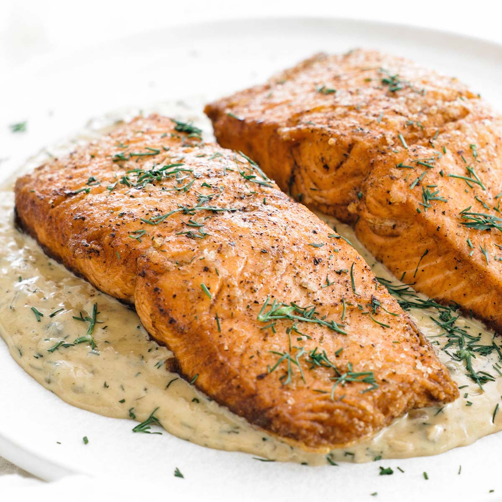

Pan Seared Salmon

Description
Pan Seared Salmon is one of my favorite low calorie meals. Typically you can get a bag of salmon pretty cheap from Aldi, and it is a decent option for meal prep for the week.
Ingredients
- 1 tablespoon extra-virgin olive oil
- ½ teaspoon kosher salt
- Freshly ground black pepper
- 4 (6-ounce) salmon fillets
Directions
- Season the salmon with the salt and a few grinds of pepper
- Heat the oil in a 12-inch nonstick skillet over medium-high heat until hot and shimmering
- Cook the salmon, without moving, skin side up, until golden and crisp, about 4 minutes
- Carefully flip the fillets and reduce the heat to medium
- Continue cooking until done to your liking, 4 to 5 minutes more
- Transfer to a platter and serve